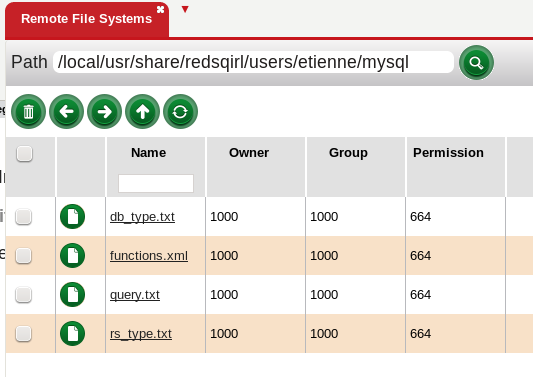

The “Remote Databases” view, accessed by clicking the red drop down arrow next the Help, Canvases, or by creating a new section by dragging a splitter down,provides a browsing mechanism for external DBMS (DataBase Management System) through JDBC (Java Database Connectivity). For example the user can interact with Oracle, MySQL, Microsoft SQL Server and other Databases through this view.
On a high level, the JDBC driver then the connection details have to be set up before interacting with this view. Oracle and MySQL are setup up differently. For other databases please read the other technology section.
For Oracle and MySql, click on Software on the menu along the top, then on settings and JDBC. The user will then need to download the JDBC jar, copy it on the Red Sqirl web server, and give the path.
For every server a user wants to connect to, a Host needs to be created. A host is composed of three parameters:
Notes: Once the connection details are filled out please use the Check button to make the details are correct.
In other driver, a user can create a new driver, the driver name should be the character between "jdbc:" and the next ":" in the jdbc URL.
For example if the url is jdbc:presto://host:port/catalog/schema, the driver should be named "presto".
The user can create a host the same way as for Oracle and MySql:
For further changes, the administrator need to use the command line, and modify the right directory and file.
In the user folder, a directory is created for each technology used. For example by default two directories are created oracle and mysql.
The functions.xml lists the functions supported.
In the rs_type.txt file, how the JDBC types are converted to Red Sqirl types.
In the db_type.txt file, how the Red Sqirl types are converted to JDBC types.
query.txt file lists the basic SQL operation that Red Sqirl use.
In order to share changes, the technology folder can be copied to the system conf folder and every user copy of that directory should be removed.
The Red Sqirl Administrator can find Microsoft SQL Server advanced settings here.